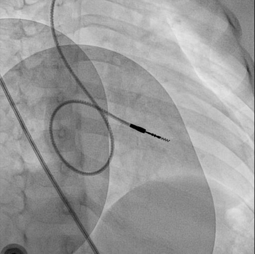
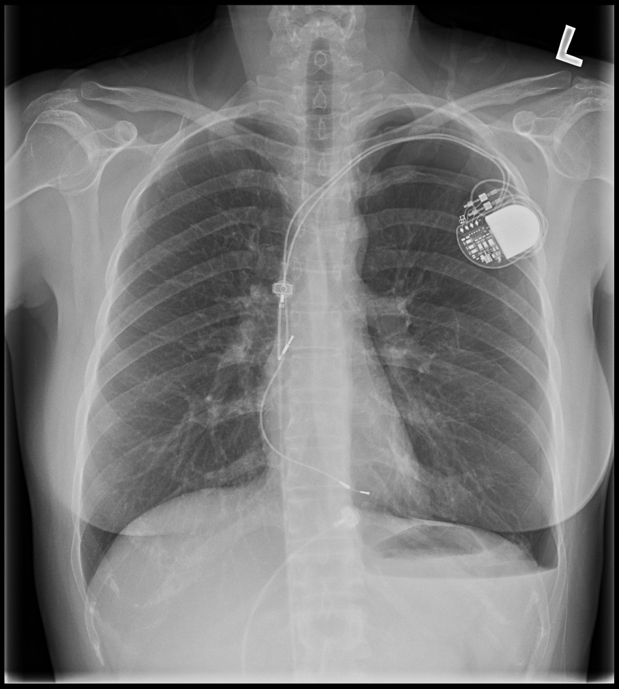

Device Implant Procedure
Raja Selvaraj, Additional Prof and Head, Department of Cardiology, JIPMER
Preparation
Pre-procedure
Pre-procedure evaluation
- Check indication
- Decide on pacing mode
- Decide on side
- Discuss with patient
Pre-procedure preparation
- Fasting (hydration)
- Ipsilateral venous cannula
- Blood investigations
- Drugs - antiplatelets, anticoagulation
- Chest X-ray
Prep and drape
- Shaving / trimming
- Antiseptic scrub
- Drape
- Skin film
Anaesthesia and Instruments
Local anaesthesia
- Lignocaine
- Additional Bupivacaine
- 0.5 - 2.0 %
- 3-4 mg/kg
Anaesthesia
- Conscious sedation
- Fentanyl + Midazolam
- General anaesthesia
Instruments - 1
- Clamps - Hemostats, Allis, Babcock
- Scissors - Mayo, Metzenbaum
- Forceps - toothed, Adson
Instruments - 2
- Scalpel - #20 blade, #11/15 blade, #3 and #4 handle
- Needle holder
- Retractor - Senn, cats paw, Weitlaner self retaining
Incision and dissection
Choosing side
- Profession ?
- Left side - Common, easier route, problems with persistent LSVC
- Right side - Difficulty due to angulation, CRT difficult, ICD problems
Side
Persistent LSVC
Skin incision
- Horizontal
- Parallel to deltopectoral groove
- Length of incision
- 20 blade
Dissection
- Use self retaining retractor
- Sharp dissection with 11 blade / Cautery
- Upto Deltopectoral fascia
Venous access
Routes
- Cephalic vein
- Subclavian vein
- Axillary vein
- Other, unconventional
Venous access at JIPMER (approx)
- 75% - Cephalic vein (30% assisted)
- 24% - Axillary vein puncture (25% with venogram)
- 1% - Subclavian vein puncture
Anatomy
Cephalic vein
Cephalic vein dissection
- Sharp dissection of pectoral fascia
- Identify pad of fat in deltopectoral groove
- Vein is within pad of fat
- Separate from fascia, distal tie, open and pass lead
Cephalic vein dissection
Cephalic vein dissection
Assisted cephalic vein access
- Wire and lead
- Wire and peel-away
- 0.014 wire -> 5F -> exchange for 0.035 -> 7F
Cephalic vein

Cephalic vein
Cephalic venogram
<video id="vid" autoplay controls> <source data-src="media/videos/cephalic.mp4" type="video/mp4"/> </video>
Cephalic vein - pros and cons
- ( - ) Learning curve
- ( - ) Time
- ( - ) Painful
- ( - ) May not take multiple leads
- ( + ) No pneumothorax
- ( + ) No lead crush
Axillary vein
Axillary vein puncture
- Fluoro guided
- Junction of clavicle and first rib
- Walk along first rib
Axillary vein - pros and cons
- ( - ) Small learning curve
- ( - ) Needs fluoroscopy
- ( - ) Needs venogram (myth !)
- ( + ) Very low risk of pneumothorax
- ( + ) No lead crush
Subclavian vein
Subclavian vein puncture
Subclavian vein - pros and cons
- ( + ) More people are familiar
- ( + ) Anatomical landmarks sufficient
- ( - ) Risk of pneumothorax
- ( - ) Risk of lead crush
Lead crush
Single versus separate punctures
- In case of difficult punctures
- Routinely ?
- Retained guidewire technique
- Double wire technique
Tips
Axillary vein / subclavian puncture - tips
- Lignocaine in syringe
- No roll under shoulders
- Trendelenburg or elevate legs
- Verify venous access (IVC)
Avoiding air embolism
- Adequate hydration !
- Trendelenberg / Leg elevation
- Pinch sheath
Venogram
- Difficult puncture
- Pre-existing leads
- 10-15 ml of contrast from ipsilateral arm
- Management of stenosis
Puncture with venogram
<video id="vid" autoplay controls> <source data-src="media/videos/puncturecrop.mp4" type="video/mp4"/> </video>
Unconventional access
- Internal jugular vein
- Femoral vein
Lead placement
Ventricular lead placement
Choosing a lead
- Active or passive
- Length
RVA position - the mimics
- RA -> PFO -> LA -> LV
- RA -> CS -> lateral vein
- RA -> Hepatic vein
RVA placement
- Gently curved stylet
- Straight stylet
- RVOT -> RVA
RVA
RVA
RV apex
<video autoplay controls> <source data-src="media/videos/perforation.mp4" type="video/mp4"/> </video>
RVOT pacing
- Active fixation lead
- Stylet shaping
RVOT pacing
RVOT pacing
RVOT pacing

RVOT pacing
RVOT pacing
Extra loop

Atrial lead placement
Atrial appendage
- Pre-formed J
- J shaped stylet
- Recognize appendage position
<video id="vid" autoplay controls> <source data-src="media/videos/RAleadplacement.mp4" type="video/mp4"/> </video>
Other atrial locations
- Active fixation lead
- Lateral wall
- Septum
VDD lead
VDD lead placement
- Similar to RVA lead
- Inter-electrode distance
- Position the bipole
Finishing
Fix and connect
Fixing lead
- Use a suture sleeve
- Fixing to fascia / muscle
Attaching PG
- Connector pin position
- Dynamometric wrench - stops and signals when desired torque is achieved
- Tug to test
Pocket creation
- Sharp dissection
- Controlled blunt dissection
- Medial
Subpectoral pocket
- Indications
- Between heads of pectoralis major
- Split pectoralis major
Closure
Closure
- Subcutaneous- Vicryl 2-0 in two layers
- Skin - Vicryl 3-0 subcuticular
- Skin - Prolene 3-0 mattress
Post implant
Post implant care
Post procedure care
- Immobilisation / bed rest ?
- Analgesia
- Chest X ray after 4-6 hours
Post procedure care
- ECG / Pacemaker check
- Antibiotics ?
- Shower ?
Post procedure CXR

PG change
Preparation
- Check lead status if possible
- Check dependent status if possibletotal 2072
- Information about leads - uni/bi, connector type
- Need for pacing, need for upgrade / change
PG change
- Locating incision
- Avoid damage to lead
Venous stenosis
Venous obstruction
<video id="vid" autoplay controls> <source data-src="media/videos/sublobstr.mp4" type="video/mp4"/> </video>